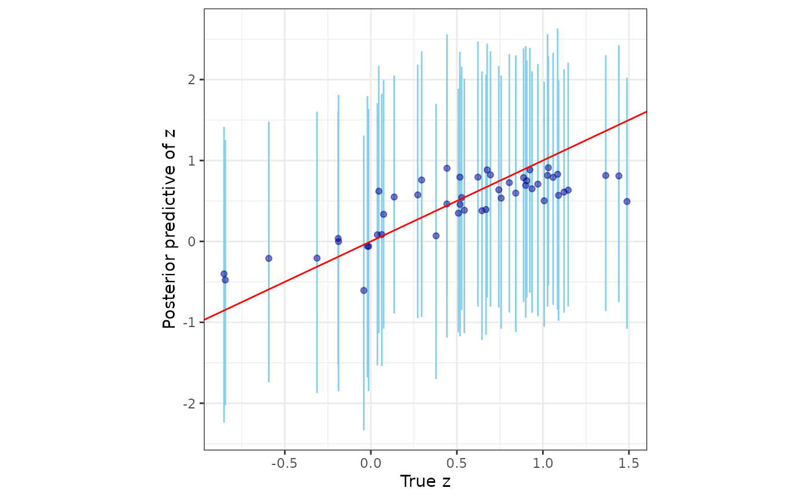

spStack implements Bayesian inference for a rich class of spatial and spatial-temporal geostatistical models using stacking of predictive densities. Besides delivering competitive predictive performance as compared to traditional fully Bayesian inference using MCMC, predictive stacking is embarrassingly parallel, and hence, fast. This package, to the best of our knowledge, is the first to implement stacking for Bayesian analysis of spatial and spatial-temporal data. Technical details surrounding the methodology can be found in the articles Zhang, Tang, and Banerjee (2025) and Pan et al. (2025).
set.seed(1729)Bayesian Gaussian spatial regression models
Here is a quick example using the lazyloaded synthetic data
simGaussian.
Step 1. Load the library spStack and prepare the
data. Here we split the data into dat_train and
dat_pred - we train our model on dat_train and
subsequently carry out posterior predictive inference at the locations
in dat_pred.
library(spStack)
# training and test data sizes
n_train <- 100
n_pred <- 50
data("simGaussian")
dat_train <- simGaussian[1:n_train, ]
dat_pred <- simGaussian[n_train + 1:n_pred, ]Step 2. Run the function spLMstack() -
define the model with a formula, input the spatial coordinates as a
matrix, specify the correlation function, and accordingly provide
candidate values of the parameters through params.list. The
argument loopd.method can be used to specify the method
used for calculation of leave-one-out predictive densities, existing
parallelization plan can be used if parallel is set
TRUE, and solver argument specifies the solver
used to carry out the optimization routine to get stacking weights.
mod1 <- spLMstack(y ~ x1, data = dat_train,
coords = as.matrix(dat_train[, c("s1", "s2")]),
cor.fn = "matern",
params.list = list(phi = c(1.5, 3, 5),
nu = c(0.75, 1.25),
noise_sp_ratio = c(0.5, 1, 2)),
n.samples = 1000, loopd.method = "psis",
parallel = FALSE, solver = "ECOS", verbose = TRUE)
#>
#> STACKING WEIGHTS:
#>
#> | phi | nu | noise_sp_ratio | weight |
#> +----------+-----+------+----------------+--------+
#> | Model 1 | 1.5| 0.75| 0.5| 0.000 |
#> | Model 2 | 3.0| 0.75| 0.5| 0.030 |
#> | Model 3 | 5.0| 0.75| 0.5| 0.000 |
#> | Model 4 | 1.5| 1.25| 0.5| 0.287 |
#> | Model 5 | 3.0| 1.25| 0.5| 0.000 |
#> | Model 6 | 5.0| 1.25| 0.5| 0.683 |
#> | Model 7 | 1.5| 0.75| 1.0| 0.000 |
#> | Model 8 | 3.0| 0.75| 1.0| 0.000 |
#> | Model 9 | 5.0| 0.75| 1.0| 0.000 |
#> | Model 10 | 1.5| 1.25| 1.0| 0.000 |
#> | Model 11 | 3.0| 1.25| 1.0| 0.000 |
#> | Model 12 | 5.0| 1.25| 1.0| 0.000 |
#> | Model 13 | 1.5| 0.75| 2.0| 0.000 |
#> | Model 14 | 3.0| 0.75| 2.0| 0.000 |
#> | Model 15 | 5.0| 0.75| 2.0| 0.000 |
#> | Model 16 | 1.5| 1.25| 2.0| 0.000 |
#> | Model 17 | 3.0| 1.25| 2.0| 0.000 |
#> | Model 18 | 5.0| 1.25| 2.0| 0.000 |
#> +----------+-----+------+----------------+--------+Step 3. Use the helper function
stackedSampler() to sample from the stacked posterior
distribution. These samples serve as the final posterior samples
corresponding to our target model.
post_samps <- stackedSampler(mod1)The final output will be a tagged list with each entry containing posterior samples of the corresponding parameter.
post_beta <- post_samps$beta
summary_beta <- t(apply(post_beta, 1, function(x) quantile(x, c(0.025, 0.5, 0.975))))
rownames(summary_beta) <- mod1$X.names
print(summary_beta)
#> 2.5% 50% 97.5%
#> (Intercept) 1.074093 2.318164 3.193045
#> x1 4.848954 4.975130 5.094167Note: The following optional steps are only required if interested in posterior predictive inference.
(Optional) Step 4. Prepare the inputs for posterior
predictive inference. The new spatial coordinates at which we intend to
carry out prediction is given by sp_pred and the value of
the covariates at these new locations are given by
X_new.
sp_pred <- as.matrix(dat_pred[, c("s1", "s2")])
X_new <- as.matrix(cbind(rep(1, n_pred), dat_pred$x1))(Optional) Step 5. Pass the output obtained by
running spLMstack() through the function
posteriorPredict() along with the new coordinates and
covariates.
mod.pred <- posteriorPredict(mod1,
coords_new = sp_pred,
covars_new = X_new,
joint = TRUE)(Optional) Step 6. Once samples from the posterior
predictive distribution are obtained, once again run
stackedSampler() to obtain samples from the
stacked posterior predictive distribution.
postpred_samps <- stackedSampler(mod.pred)Next, we analyze how well we predict the responses by plotting their posterior predictive summaries against their corresponding true values.
postpred_y <- postpred_samps$y.pred
post_y_summ <- t(apply(postpred_y, 1, function(x) quantile(x, c(0.025, 0.5, 0.975))))
y_combn <- data.frame(y = dat_pred$y, yL = post_y_summ[, 1],
yM = post_y_summ[, 2], yU = post_y_summ[, 3])
library(ggplot2)
ggplot(data = y_combn, aes(x = y)) +
geom_errorbar(aes(ymin = yL, ymax = yU), color = "skyblue") +
geom_point(aes(y = yM), color = "darkblue", alpha = 0.5) +
geom_abline(slope = 1, intercept = 0, color = "red", linetype = "solid") +
xlab("True y") + ylab("Posterior predictive of y") + theme_bw() +
theme(panel.background = element_blank(), aspect.ratio = 1)More details about this can found in the vignettes titled “Spatial Models” and “Posterior Predictive Inference”.
Bayesian non-Gaussian spatial regression models
The workflow for the spatial generalized linear models are similar.
Here is a quick example using the lazyloaded synthetic data
simPoisson.
Step 1. Prepare data by splitting into train and test sets.
# training and test data sizes
n_train <- 100
n_pred <- 50
# load spatial Poisson data
data("simPoisson")
dat_train <- simPoisson[1:n_train, ]
dat_pred <- simPoisson[n_train + 1:n_pred, ]Step 2. Run the function spGLMstack()
after specifying the family, and supplying the candidate
values of the spatial process parameters phi and
nu, and the boundary adjustment parameter
boundary. The loopd.controls option can be
used to specify the method and parameters used for calculation of
leave-one-out predictive densities. The input
list(method = "CV", CV.K = 10, nMC = 500) corresponds to
-fold
cross-validation with
and using 500 Monte Carlo samples for calculating each predictive
density.
mod1 <- spGLMstack(y ~ x1, data = dat_train, family = "poisson",
coords = as.matrix(dat_train[, c("s1", "s2")]), cor.fn = "matern",
params.list = list(phi = c(3, 4, 5), nu = c(0.5, 1.0),
boundary = c(0.5)),
priors = list(nu.beta = 5, nu.z = 5),
n.samples = 1000,
loopd.controls = list(method = "CV", CV.K = 10, nMC = 500),
verbose = TRUE)
#> Some priors were not supplied. Using defaults.
#>
#> STACKING WEIGHTS:
#>
#> | phi | nu | boundary | weight |
#> +---------+-----+-----+----------+--------+
#> | Model 1 | 3| 0.5| 0.5| 0.000 |
#> | Model 2 | 4| 0.5| 0.5| 0.000 |
#> | Model 3 | 5| 0.5| 0.5| 0.000 |
#> | Model 4 | 3| 1.0| 0.5| 0.115 |
#> | Model 5 | 4| 1.0| 0.5| 0.357 |
#> | Model 6 | 5| 1.0| 0.5| 0.528 |
#> +---------+-----+-----+----------+--------+Step 3. Run stackedSampler() to obtain
posterior samples from the stacked posterior and then analyze the
output.
post_samps <- stackedSampler(mod1)
post_beta <- post_samps$beta
summary_beta <- t(apply(post_beta, 1, function(x) quantile(x, c(0.025, 0.5, 0.975))))
rownames(summary_beta) <- mod1$X.names
print(summary_beta)
#> 2.5% 50% 97.5%
#> (Intercept) 0.8915484 2.0784747 3.3153751
#> x1 -0.6754765 -0.5677041 -0.4517785Note: The following optional steps are only required if interested in posterior predictive inference.
(Optional) Step 4. Prepare the inputs for posterior predictive inference.
sp_pred <- as.matrix(dat_pred[, c("s1", "s2")])
X_new <- as.matrix(cbind(rep(1, n_pred), dat_pred$x1))(Optional) Step 5. Finally, pass the model output
through the function posteriorPredict()
mod.pred <- posteriorPredict(mod1,
coords_new = sp_pred,
covars_new = X_new,
joint = FALSE)(Optional) Step 6. Once samples from the posterior
predictive distribution is obtained, obtain samples from the stacked
posterior predictive distribution using
stackedSampler().
postpred_samps <- stackedSampler(mod.pred)Further, we analyze the posterior predictive distribution of the spatial process against their corresponding true values.
postpred_z <- postpred_samps$z.pred
post_z_summ <- t(apply(postpred_z, 1, function(x) quantile(x, c(0.025, 0.5, 0.975))))
z_combn <- data.frame(z = dat_pred$z_true, zL = post_z_summ[, 1],
zM = post_z_summ[, 2], zU = post_z_summ[, 3])
ggplot(data = z_combn, aes(x = z)) +
geom_errorbar(aes(ymin = zL, ymax = zU), color = "skyblue") +
geom_point(aes(y = zM), color = "darkblue", alpha = 0.5) +
geom_abline(slope = 1, intercept = 0, color = "red", linetype = "solid") +
xlab("True z") + ylab("Posterior predictive of z") + theme_bw() +
theme(panel.background = element_blank(), aspect.ratio = 1)
Additional functionalities
We have devised and demonstrated Bayesian predictive stacking to be an effective tool for estimating spatial/spatial-temporal regression models and yielding robust predictions for Gaussian as well as non-Gaussian data. We develop and exploit analytically accessible distribution theory pertaining to Bayesian analysis of linear mixed model and generalized linear mixed models that enables us to directly sample from the posterior distributions. The focus of this package is on effectively combining inference across different closed-form posterior distributions by circumventing inference on weakly identified parameters.
The “Technical Overview” vignette provides a comprehensive review of the conjugate Bayesian hierarchical models used here. The “Spatial Models” and “Spatial-Temporal Models” explains in detail how to use the functions for spatial and spatial-temporal regressions, respectively. Future developments and investigations will consider zero-inflated non-Gaussian data and adapting to variants of Gaussian process models that scale inference to massive datasets by circumventing the Cholesky decomposition of dense covariance matrices.